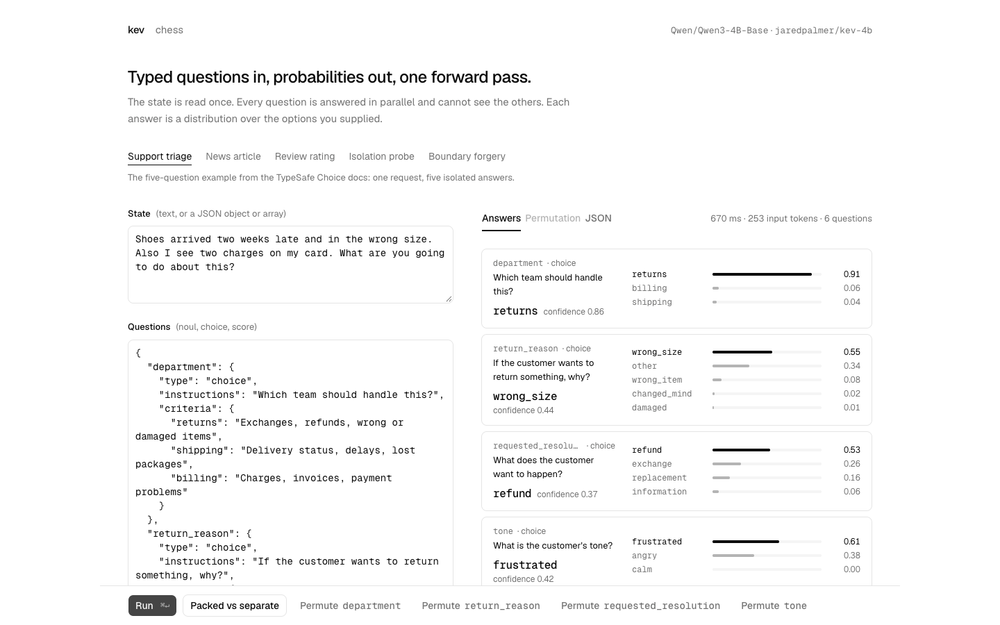

kev
A free, four-size family of Jev-style decision AIs, from one that runs on a laptop to one that needs a data-center chip.
Point kev at examples of a decision you make over and over, run its training script for about a dollar of computer time, and get your own private version of TypeSafe's paid Jev - answering the same way, over the same kind of connection, so nothing else in your code has to change.

How does it work?
You want a fast, cheap AI answer to a multiple-choice question your software asks over and over, but a hosted decision AI charges per use and never learns your specific rules.
The README's own example: an out-of-the-box model scored 67.7% on a support-ticket test built from the maker's rules - fine, but not great.
Your code calls the small server kev starts on your own computer, the same way it would call TypeSafe's hosted Jev.
uv run --extra serve python -m kev.serve --run jaredpalmer/kev-4b --port 8009 starts it; from then on your code sends it requests over the same kind of web address Jev uses.
A block of text, plus your own questions and their possible answers.
The demo's support-ticket example: a customer's message, plus questions like "which team should handle this?" and "what is the customer's tone?", each with a short list of options.
It reads the text once and answers every question at the same time, as a percentage split across only the options you gave it - it never writes a sentence.
- Reads the whole block of text once
- Scores every option of every question in parallel, instead of writing an answer word by word
- Applies a built-in correction so its confidence numbers better match how often it's actually right
On the live demo, six questions about a short support ticket came back in 670 milliseconds.
Answers your software can act on immediately, plus the option to make them sharper on your own data.
- One answer per question, always one of your own listed optionsdepartment: returns, 91% sure; tone: frustrated, 61% sure
- A confidence score for every option, not just the winnerreturn_reason: wrong_size 0.55, other 0.34, wrong_item 0.08, changed_mind 0.02, damaged 0.01
- Better accuracy after a cheap training run on your own examplesone real test the maker documents: 0.804 to 0.904 accuracy on complaints the model had never seen, after training on 5,219 labelled examples
What changes for me?
Without it
- A hosted decision AI charges money on every call and sends your document to someone else's servers.
- It doesn't know your specific rules, so its accuracy on your exact kind of decision is a guess until you test it.
With it
- Four free, Apache-2.0 sizes to pick from - a laptop-friendly 0.8B up to a 27B that beats or matches Jev on 9 of 11 tested question types.
- A training run on your own examples costs about $1 of rented computer time and can turn a mediocre out-of-the-box score into a strong one.
- It answers over the same kind of connection Jev does, so software already wired up for Jev can often switch by changing one web address.
How hard is it to try?
Effort
- Try it with nothing to install: the Hugging Face demo runs the two smallest sizes and lets you type your own text and questions.
- To run it yourself, a developer clones the repo and starts the built-in server with one command, pointed at whichever size fits their computer.
- To make it more accurate on your own decision, a developer runs the included training script on examples they provide - the maker's own test took one size from 67.7% to 73.6% accuracy in about 15 minutes.
What it takes on your computer
- Space on disk
- Ranges a lot by size: the 0.8B model is the only laptop-friendly one; the 27B model alone is about 55 GB of weights on disk. Each size downloads separately from Hugging Face the first time you run it - kev's own code is tiny.
- Memory while it runs
- About 2 GB of GPU memory for the smallest (0.8B) model, roughly 17 GB for the 9B model, and about 66 GB for the 27B model once it's serving requests (its 55 GB of weights plus room for handling several requests at once).
- Runs on
- A Mac with Apple Silicon (using its own MLX speed-up), or Windows/Linux with an NVIDIA graphics card, depending on the size you pick: the 0.8B model runs on any Apple Silicon Mac or a small cloud graphics card (an L4); the 4B and 9B want a 32 GB Mac or a bigger cloud graphics card; the 27B model wants a data-center-class one. Needs Python 3.12 or 3.13.
Paste this into Claude Code. It runs your safety scan first, then a 10-minute test.
/skillspector https://github.com/jaredpalmer/kev If that scan passes: in a scratch folder, install kev, start the server with the smallest model (kev-0.8b), and run the README's own example question against it. Show me the actual answer and confidence scores it returns. 10 minutes max, then stop and report back in plain English.
Should I?
Great if you...
- You're already calling TypeSafe's Jev and want a free version you can run yourself or retrain on your own data
- You want to try a decision-model AI without paying per call, and you have at least a modern Mac or a cloud GPU account
Skip it if...
- You need the single most accurate answer available and are fine just paying for hosted Jev - only the largest, most hardware-hungry kev size gets close
- You have no GPU and no modern Mac - even the smallest size needs real computer power to answer quickly
- You want a finished product rather than a piece of infrastructure you wire into your own software
Instead, you could look at
- layaThis week's #1 pick, and the other free Jev-style decision AI: one size instead of four, no training script, but claims over 100 languages by the author's own measurement.
- TypeSafe JevThe paid, hosted original kev is built to match. No hardware to manage, but it costs money per use and your documents leave your machine.
Is it safe?
- Security advisories: 0GitHub's advisory list, checked Sep 27
- Searches for CVEs, vulnerabilities, malware and scams20 results read, including the national CVE database: nothing found
- Are the stars earned?7.4K stars, 10 contributors, 296 commits. findarepo's star check: looks organic
Watch out for
- It's changed fast in its first two weeks - check the live numbers, not old ones. It launched with three sizes on Sep 17; a stronger fourth size on a different base model was added Sep 24, and the accuracy figures moved as the recipe changed, including the ones on this page.
- Even after its own correction, kev is still more often confidently wrong than Jev. On the maker's own test using questions the model never trained on, that correction cuts the 9B model's rate of being at least 90% sure and still wrong from 8.7% down to 4.0% - but hosted Jev sits at 3.7% on the same test.
- Smaller sizes fall further behind on world knowledge and on dates. The 9B model scores 0.74 on a general-knowledge test (MMLU) against Jev's 0.90, and none of the sizes can reliably subtract dates without an extra setting turned on.
- The bigger sizes need real hardware. The 27B model needs about 66 GB of GPU memory to serve, and even the 9B model wants roughly 17 GB - only the smallest, least accurate size is realistically a laptop model.
Who's using it, and for what?
It's 10 days old and moving fast: it launched with three sizes on one AI base, then added a stronger fourth size on a different base within the week, and the accuracy numbers shifted as the recipe changed. Nobody has published a production rollout yet - the real-world reports so far are both hands-on speed checks on a Mac.
A developer testing local AI on Apple hardware (Hack-Log, note.com)
Measured kev's new 0.8B model against its older 0.6B predecessor on the same M4 Mac, sending the same request 13 times to each.
The new model came back in a median of 1,958 milliseconds versus 197 milliseconds for the old one - about 10 times slower - which the author traced to the new model's core layer missing a fast path for that chip.
Hack-Log: benchmarking kev on Qwen vs the older kev, on an M4 Mac, Sep 21Pinggy (developer blog)
Ran kev's smallest model on their own M3 Pro Mac through its new Apple-chip speed-up, routing a sample customer-service ticket.
The same request dropped from 213 milliseconds on the old path to 77 milliseconds on a fresh question and 47 milliseconds when asked again, after one slower 3.2-second first load.
Pinggy: best open-source Jev alternatives, Sep 23
Who's talking about it
- Hacker NewsKev: Tiny Jev-like family of decision models built on top of Qwen3.5
- BlogRuntimeWire: Jared Palmer ports Kev to Qwen3.5 for roughly $95 in H100 time
- NewsletterAI Weekly: Jared Palmer ships Kev, an Apache-2.0 Jev-style decision model family
Sources
- kev on GitHub (README, model table, benchmarks), Sep 27
- kev live demo on Hugging Face (our test), Sep 27
- kev model collection on Hugging Face, Sep 27
- findarepo: kev stats, growth and star check, Sep 27
- TypeSafe: introducing System One models and Jev (pricing, background)
- Hacker News: Kev launch thread, Sep 21
- RuntimeWire: Jared Palmer ports Kev to Qwen3.5, Sep 21
- AI Weekly: Kev launch alert, Sep 21
- Hack-Log: kev on an M4 Mac, Sep 21
- Pinggy: best open-source Jev alternatives, Sep 23